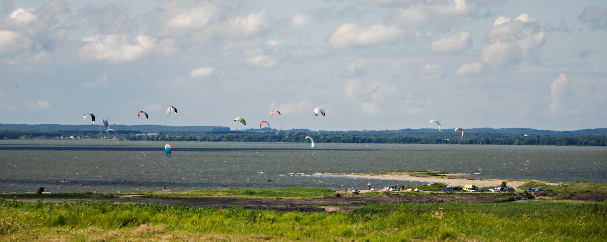
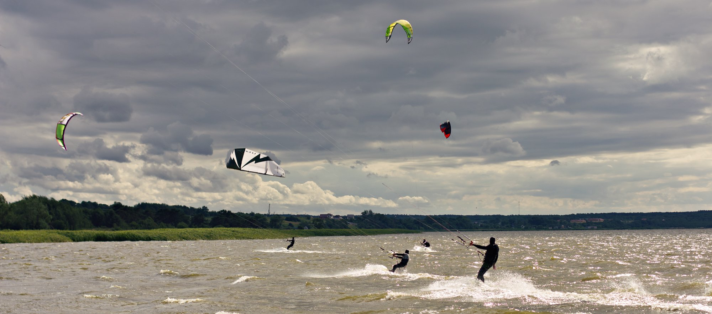

Кайтсерфинг в Калининграде
Чатики в WhatsApp, тут все общаются
Кайты Kite4you
— Кайтбич
Wave clinic
— морская каталка, Зеленоградск, Куршская Коса
Полезные материалы
Метеостанции Калининграда
Вебкамера Зеленоградск
(променад у спота Амбар)
Обзор кайт и сёрф спотов Калининграда
— ветровая статистика, регионы, описание спотов
Правила спота Кайтбич
Кайтфорум Kite4you
Инструктора, школы, сервис
Загораев Артем,
Kite4you
, кайт
Городничев Олег "Дельфин", кайт
Балякин Александр,
Торгуга
, вейк за катером, вейксерфинг, кайт, SUP
Липовская Юлия, кайт
Исаков Евгений,
König Surf Club
, сёрфинг, SUP
Левинец Владимир, виндсерфинг, ремонт кайтов
Wake Family 39
, вейк за лебедкой
Видео
Кайтсерфинг в Калининграде
, 2012
Магазины снаряжения
Hydrosfera.pl
. Удобно общаться на английском, с удовольствием дают скидки, особенно при оплате наличными. Можно платить пластиковыми картами, но только в магазине в Władysławowo.
abcsurf.pl
 
Кайтбич — самый популярный спот в регионе, 2011